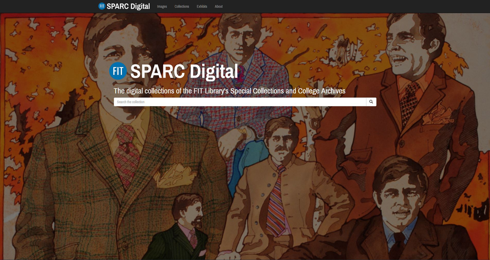
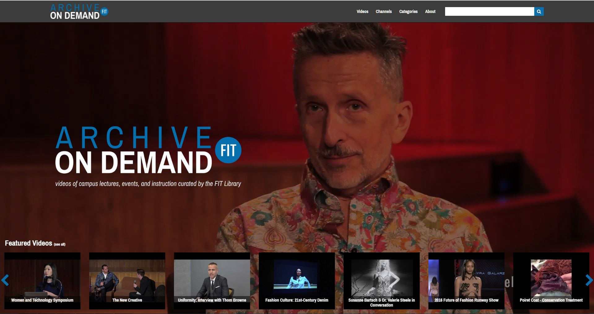
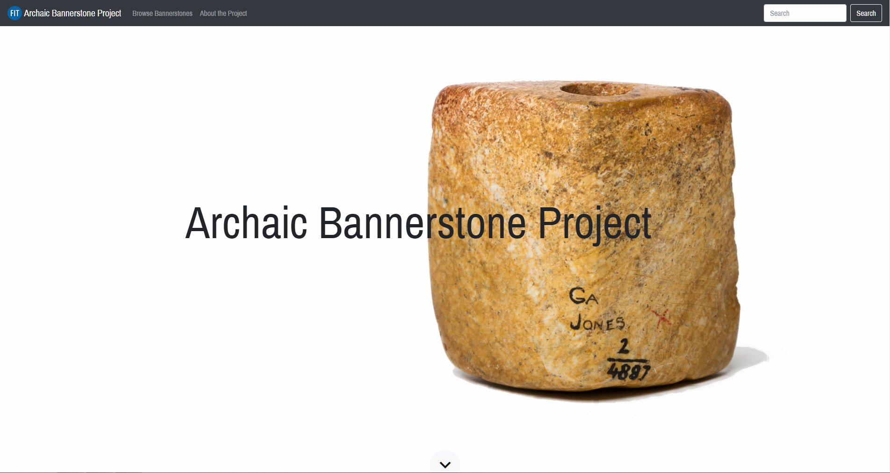
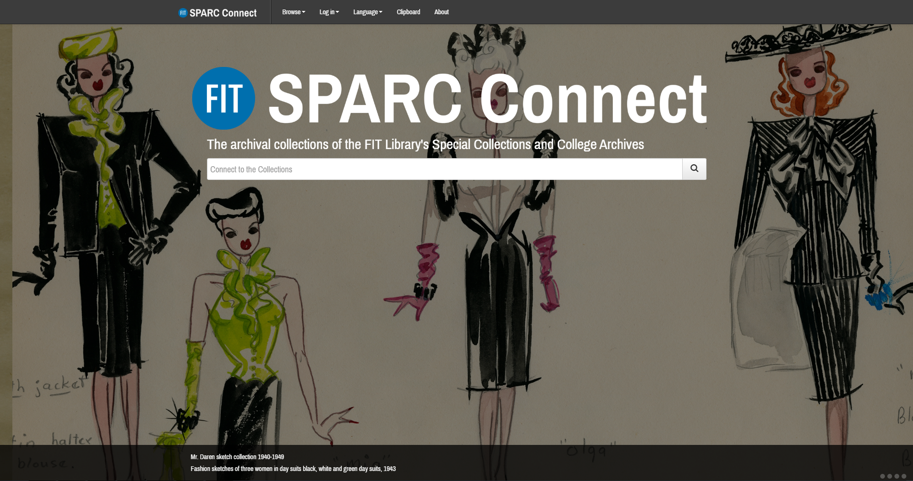
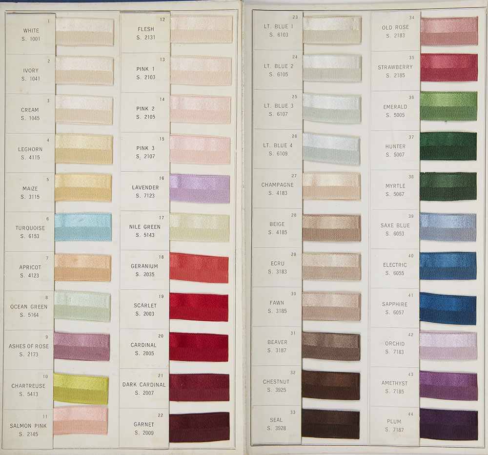

Introduction
Thank you for visiting my Tenure & Promotion Portfolio. This portfolio has been compiled as part of my application for Certificate of Continuous Employment to the Fashion Institute of Technology in 2018. In this portfolio, the T&P Committee will find complete documentation of my contributions and service as an adjunct faculty member to FIT.
I joined the Gladys Marcus Library as the Digital Initiatives Librarian in May 2015. In this role, I am responsible for overseeing and directing library initiatives involving both digital content and metadata. Working from professional standards and best practices, I am responsible for formulating policies and procedures for all parts of the digital content lifecycle: production, management, description, access and preservation. In fulfilling these responsibilities, I have undertaken and managed numerous digital projects.
In addition to my primary responsibilities, as a faculty member I serve on various teams, committees, and working groups throughout the Library and College. In this capacity, I have made valuable contributions to governance and strategic planning. This essential work with colleagues across the Library and College is very rewarding, and has led to cross-disciplinary digital initiatives that benefit FIT and the greater community. Finally, as a library professional, I am an active member of my field. I attend numerous conferences and workshops, while keeping up-to-date on the relevant topics in my field. For additional professional experience, please review my resume.
Thank you for your consideration.
Digital Projects
In my primary function as the Digital Initiatives Librarian, I have undertaken numerous digital projects with the objective of delivering FIT Library resources in new ways to the FIT community, as well as to reach new audiences beyond traditional boundaries.
An additional and necessary aim of these projects is to organize, manage and preserve our growing array of digital content. As the Library continues to evolve into the 21st century, an increasing amount of digital content is being created by the Library and the College, itself, rather than collected primarily from third parties. Integral in the creation of new digital content is the responsibility to steward it to future generations. Along with overseeing the practical aspects of this digital content lifecycle, I have also sought to create websites and user interfaces that reflect the creativity of the FIT brand and provide users with novel ways of discovering content. These sites not only showcase unique, exciting content, but FIT itself.
To develop these projects, I have collaborated with colleagues across the Library and the College. I have worked closely FIT Information Technology (IT) to set up servers to host and maintain these projects. I have worked with a variety of open-source applications and numerous coding languages, which has created less reliance on costly third-party hosting. When working with teams, I have utilized project management tools to create more efficient workflows and accountability. Throughout, a growing web presence has been built for the Library and the College, and with each new project proof that we can continue to grow further.

"SPARC Digital is a platform created by the FIT Library's Special Collections & College Archives to showcase the rare and unique materials from our collections that have been digitized. Our goal is to make our collections more widely available online to the FIT community and the general public."
Background: Prior to the launch of SPARC Digital, the FIT Library's Special Collections & College Archives (SPARC) did not have a dedicated platform for its digitized materials. A small portion of their digitized images (over 2000 images of original fashion sketches and photographs) had been uploaded to FITDIL, the library's general purpose digital image library. FITDIL, however, is primarily intended for usage within the FIT community, and its general nature limits its ability to showcase the uniqueness of SPARC's materials.
SPARC Digital was thus conceived as a platform that would not only showcase digitized materials, but also allow us to tell the stories of these materials through online exhibitions. In addition, we wanted to offer users the ability to navigate these collections by color, which is a feature that is being seen more and more in online collections. When a user views an image on SPARC Digital, they will see a series of swatches that indicate the predominant colors that make up that image, and by clicking on one of those color swatches, the site will return all the images that share that color. Finally, we wanted to design a site and user experience that reflected the elegant aesthetics of the materials, as well as to contribute positively to the public face of FIT.
- Oversaw launch of SPARC Digital on 10/2/2017 with nearly 2500 images and 2 online exhibitions, with new content being added frequently
-
SPARC Digital was written up in Fashion, Textile & Costume Librarians and Accessories Magazine
- Created promotional flyer for publicizing launch of website on social media
- Added capability to download high resolution images of Public Domain items, e.g.
- Implemented typeahead autocomplete search functionality, e.g.
- Developed plan to digitize thousands of new fashion plates for SPARC Digital (see grant project team below)
- Updated underlying code to be compliant with accessibility standards
- Implemented color search and browse functionality (see here, for more background on this feature)
- Implemented faceted searching using Solr server (see below)
- Implemented Open Seadragon image viewer, e.g.
- Integrated Omeka application with FIT's FITDIL (built on MDID3); see accepted presentation below
- Built custom Omeka theme using Bootstrap design framework
- Developed Python code to perform color analysis on nearly 2,500 digitized items from SPARC collection
-
Site statistics: 537 unique visitors with 8,977 total pageviews (9.11 pages/sessions)

"Archive on Demand is a new online video platform created by the FIT Library. Our goal is to make videos of lectures and events that occur on campus available online to the FIT community and the general public. This online video resource is a wonderful way to increase access to some of the lectures, events, exhibitions, and instruction happening at FIT and share them with a wider audience."
Background: FIT holds numerous lectures, events and exhibitions that have been recorded over the years, and in practice these videos are shared with the FIT Community and general public through various YouTube channels held by departments across the College. The idea behind Archive on Demand is to curate and aggregate these videos onto a single platform. Along with being a single point of access for users, Archive on Demand also serves as a means of organizing, describing, and preserving the College's video assets. In addition, with Archive on Demand as point of distribution, the site has been instrumental in reshaping and improving video workflows on campus.
-
Established workflow for harnessing video content across the College; designed architecture for storing and managing video assets across the College
- Oversaw launch and complete redesign of Archive on Demand (4/2016), moving from WordPress to Omeka application
-
Built site on custom Omeka theme, which integrates video and related content from YouTube and Google Drive
- Site includes over 300 videos, with new videos added on a frequent basis
-
Supervises work of Library Associate in curation of content and creation of metadata
- Produced Archive on Demand promotional video and business cards for Convocation, 2016
-
Archive on Demand was written up in FIT Newsroom
- Developed guidelines for promotion of video content on social media
- Developed new metadata guidelines
- Undertook project to digitize vintage FIT instructional videos, e.g. "Methods of Basic Draping" (1982); these vintage videos are some of the most popular on the site
- Worked to create OAI-PMH link between Archive on Demand and WorldCat Digital Collection Gateway to automate the addition of bibliographic records for AOD videos to WorldCat
-
Site statistics: 3,032 unique visitors with 12,369 total pageviews (2.8 pages/sessions)
Solr
"Solr is highly reliable, scalable and fault tolerant, providing distributed indexing, replication and load-balanced querying, automated failover and recovery, centralized configuration and more. Solr powers the search and navigation features of many of the world's largest internet sites."–lucene.apache.org/solr/
Background: both SPARC Digital and Archive on Demand are built with the application, Omeka, and while this application offers many advantages for managing digital collections, it is lacking in its search functionality. Using a plugin for this application, we are able to integrate the search platform, Solr, into these sites. To do so, I worked closely with IT to set up a dedicated Solr server. In addition, I customized the plugin to work with the most up-to-date version of the Solr application as well as to work best with our particular sites. When fully integrated, the sites will have the ability to search with relevance ranking and to return faceted results, a minimum standard for today's user.
FIT Archaic Bannerstone ProjectIn Development: planned launch in Spring 2018

"The FIT Bannerstone Project seeks to establish a unique, extensive repository of over 600 images taken by FIT Professor Anna Blume of Archaic Native American Bannerstones currently in the collection of the American Museum of Natural History. In addition to being a searchable repository of images, this site will provide researchers and the general public with basic information on Bannerstones. Once the project is established we will seek to add Bannerstone images from other museum collections."
Background: Based on the several digital projects that I have worked on at FIT, I was approached by Professor Anna Blume to work on a collaborative digital humanities project between members of the Library and the History of Art Department. Professor Blume has conducted significant research into Native American Bannerstones, and seeks to share the results with her peers and general public in the spirit of Open Access. When launched, this site will allow users not only to browse and search the content, but to download full resolution images and research data.

"SPARC Connect is an online database (created through a fully web based archival description application called AtoM, which is an acronym for Access to Memory) of archival holdings, including documents, photographs, and digital objects, at the Fashion Institute of Technology, Gladys Marcus Library, Special Collections & College Archives."
Background: As the FIT Library's Special Collections & College Archives undertook a significant renovation of its physical space, it also decided that it was necessary to update their digital infrastructure. The department decided to adopt an archival management system as a much-needed upgrade to the process of documenting their archival holdings on spreadsheets, a method that is falling out of practice in the profession. AtoM, a popular application within the archival profession, was selected for this purpose, and Artefactual Systems, the application developer, was contracted to host this service for SPARC. Working with SPARC, I customized the site's default theme and user interface to better reflect the FIT brand and engage our users. After completing the design and working with Artefactual Systems to implement the theme, I took over management of the site for several months, due to a staffing vacancy in SPARC, and readied the site for launch.
- SPARC Connect launched, 3/2017
- Trained new SPARC associate on management of the AtoM system
- Designed custom AtoM theme; updated for new version of AtoM
- Updated and transferred 11 finding aids to AtoM format and ingested into system
-
Worked with Artefactual to fix character encoding issue in database
-
Serve as consultant to troubleshoot any technical issues
Web Archiving
Background: Web archiving is a developing practice in the archives and library profession that involves the collection and preservation of web pages. Whereas traditional media are generally static, web archiving poses the challenge of dealing with materials that are highly dynamic. Along with several colleagues, we have led the effort to begin to archive FIT's web presence, exploring the tools Archive-It and Webrecorder.
-
Web Archiving working group formed with members of the Library, Communications and External Relations, and the Office of Compliance and Audit
- Webrecorder Presentation, 1/2018
- Archive-It Demo, 8/2016, 9/2016
- Began weekly archiving of the FIT homepage
Forecast Digitization ProjectWithdrawn

Background: A team was formed in 2016 to explore the feasibility of digitizing the library's Historical Forecast Collection. The team met for several months, pursuing several strategies, scanning sample forecasts, and developing a prototype website, but eventually it was decided that the project was not feasible at this time. There is still a possibility that parts of this project will form the basis of an online exhibition for SPARC Digital.
Service to the College
As an adjunct faculty member, I am an active member of my department, Acquisitions and Metadata Services (AMS), as well as an active participant in various committees, working groups, and teams across the Library and College. In this capacity, I have worked with colleagues in various departments across FIT, and have contributed my expertise to areas outside of my primary role as Digital Initiatives Librarian.
Library-Wide Service
Library Teams, Committees & Working Groups
Acquisitions and Metadata Services (AMS) 2015-
- Developed new workflows for ingesting e-book records into the library’s catalog
-
Worked with Library Technology User Services (LTUS) to fix JavaScript problem in library’s dedicated OPAC kiosks
-
Worked with the SUNY Office of Library and Information Services (OLIS) for several improvements to the OPAC search index
-
Worked with OLIS to implement a PURL (permanent URL) feature in StyleCat, a feature eventually adopted by all SUNY Library OPAC’s
-
Administrator for ProQuest ETD portal, a platform facilitating electronic submission, review, and publication of all Graduate School theses
-
Developed communities and collections on the SUNY DSpace platform to accommodate the graduate programs that require students to present group capstone projects rather than traditional theses, the former of which cannot be properly stored with ProQuest
-
Developed workflow to use ProQuest metadata to create catalog records, rather than create them from scratch
Digital Initiatives Working Group (Chairperson) 2016-
-
As chairperson, leads quarterly meetings to coordinate digital initiatives across the various departments of the library
-
Worked with FIT Office of Library Directors (FOLD) to establish working group in 2016
FITDIL (FIT Digital Image Library) 2015-
-
Works as part of team to manage digital repository of nearly 100,000 images of student and faculty work, exhibitions, and instructional resources
- Worked with FITDIL team to successfully relaunch FITDIL with latest version of MDID
- Worked with team to create prototypes for 360° images (ex. 1, ex. 2).
- Worked with FITDIL group to develop workflows to digitize collection of fashion runway slides; investigated copyright status of runway slides
Reference and Instructional Services (RIS) 2015-
-
Works weekly reference desk and "Ask the Library" shifts
-
Attends demos and tutorials on Library resources and databases to keep up-to-date on reference desk practice
LibGuides 2015-
Archive on Demand 2015-
- See above for accomplishments on this team
Collection Development 2015-
Library Professional Development Day 2015, 2016
-
Served as core team member to organize the 2016 Library Professional Development Day
-
Designed 2016 event poster/flyer.
Search Committees
- SPARC Associate Summer 2017
- Head of Reference and Instructional Services Fall 2017-Spring 2018
Forecast Digitization Working Group 2016-2017
- See above for accomplishments on this team
Love Your Library 2016
-
Team coordinates special events and guest speakers for the Library
Social Media 2016
-
Team coordinates social media policy for the Library's social media channels
Library Outreach
Library Liaison to the Toy Design Department 2015-
-
Developed LibGuide for Toy Design Program
-
Ordered Toy Design books for the Library collection
Library Liaison to the Sustainable Interior Environments Graduate Program 2015-2016 (program discontinued)
-
Ordered Sustainable Design books for the Library collection
Academic Resources Fair Orientation, Fall 2017
-
Represented Library as part of orientation event designed to meet with new students and give them basic information about the Library
Library Community Session Orientation, Spring 2017
-
Welcomed new students to event that provided information about services provided by each department of the Library
Archive on Demand Outreach Convocation, Fall 2016
Orientation Street Fair Orientation, Fall 2016
-
Worked booth at orientation event where new students played 'carnival' games and were given basic information about the Library
Library Presentations
- Library Walk & Talk: SPARC Digital, 9/28/2017
- Presentation on New Version of FITDIL for Library Director, 11/22/2016
- Library Walk & Talk: Archive On Demand (and other digital initiatives), 3/31/2016
College-Wide Service
FIT Teams, Committees & Working Groups
Video Task Force/Video Working Group 2015-2016, 2018-
-
Works as part of team (made up of members from the Library, Communications and External Relations, the Museum, and IT) to identify and recommend best practices for all video-related activities at the College
-
Working to develop workflow to make videos accessibility-compliant (i.e. includes closed-captioning)
-
Developed model for organizing and maintaining FIT’s video resources until a digital asset management system can be implemented
-
Assisted with development of a college-wide video request form, with focus on integrating metadata collection into the form
Faculty Senate Instructional Technology Committee 2016-2018
-
Committee works with the IT department to ensure that technology strategy and policy supports the needs of FIT faculty
- Committee developed guidelines for new Faculty Research Space
- Developed prototype website for Instructional Technology Committee project using WordPress platform (not further pursued)
Decoded Dress: The Fashion History Timeline 2017-
-
NEH/ACLS Grant proposal led by Justine De Young of the History of Art Department to digitize thousands of fashion plates to be added to SPARC Digital as part of the Fashion History Timeline project
DAMS (Digital Asset Management System) Working Group 2015-2016
-
Working Group was formed to study the feasibility of implementing a digital asset management system at FIT
-
Working Group developed proposal to FIT Administration to begin process to implement DAM solution
Professional Development
As a library professional, I take advantage of many of the conferences and workshops offered in New York City, as well as attending national conferences when possible. Much of this activity has directly influenced my work at FIT. As my body of work continues to develop, I am actively pursuing presentations at conferences. In addition, as a member of the online community, I have contributed to my field through code repositories and listservs.
Attended
- Universal Elements of Good Design 12/4/2017, METRO NYC
- Code4Lib 2017 Conference 3/7-3/9/2016, Virtual
- METRO's 2017 Annual Conference 1/11/2017, NYU
- Archive-IT Webinar/Demo 8/18/2016 & 9/29/2016
- Digital Preservation at Rhizome: An ARLIS/NA New York Chapter and METRO Event 5/19/2016, New Museum NYC
- ArtStor Copyright Webinar 5/18/2016
- IIIF Conference 5/10/2016, MOMA NYC
- Code4LibNYC Meeting 3/29/2016, METRO NYC
- Code4Lib 2016 Conference 3/8-3/10/2016, Philadelphia
- METRO's 2016 Annual Conference 1/20/2106, Baruch College
- Metro User Experience Special User Group 10/14/2015, METRO NYC
- Getting it Right on Rights and Orphan Works 6/18/2015, METRO NYC
- SUNYLA Annual Conference (SUNY Library Association) 6/4/2015, SUNY Purchase College
- DAM NY Conference (Digital Asset Management) 5/7/2015, NYC
- Various Library Walk & Talks 2015-
Open Source Contributions
In the spirit Open Source and Open Access, I publish all the code for the digital projects I have contributed to (including this portfolio) on GitHub. GitHub is a platform that hosts code repositories for millions of users, and facilitates sharing, collaboration, and reuse of Open Source projects. As I have used the code of other developers to bring projects to fruition, so others can do the same with my contributions.
Future Goals
Across all of my duties as a faculty member at FIT and my professional activities as a librarian, I am constantly exposed to new technologies and developments in the profession that may be of great benefit to the College. To this end, implementing new digital initiatives requires balancing the necessity and feasibility of each project. As I weigh these elements, my growth as a professional, along with the rich, collaborative environment afforded by FIT, continues to open the door to new initiatives that I look forward to exploring.
-
Implement a digital repository to manage and preserve the library's digital assets
-
Position the Library as a resource for Digital Humanities Projects at the College
-
Integrate Archive on Demand with Solr
-
Develop an online exhibition for Historical Forecasts
-
Scale up digitization of archival videos for Archive on Demand
-
Actively pursue conference participation and national speaking opportunities
-
Redesign LibGuides